SENG 474: Assignment 3 Report
Nathan Woloshyn
Introduction
Clustering algorithms are unsupervised machine learning techniques that aim to partition a dataset into groups or clusters, based on the similarity between data points. These algorithms are widely used in various domains, such as pattern recognition, image processing, market segmentation, and anomaly detection.
In this assignment, we will explore and analyze the performance of four clustering methods on two provided datasets. The clustering methods include two variants of Lloyd’s algorithm (k-means) with different initialization strategies, and two variants of hierarchical agglomerative clustering with different linkage criteria.
Specifically, we will implement Lloyd’s algorithm with uniform random initialization and k-means++ initialization. For hierarchical agglomerative clustering, we will use Euclidean distance as the dissimilarity measure and employ both single linkage and average linkage as clustering criteria. Our goal is to compare the performance of these methods and gain insights into the characteristics of the datasets and the clustering results.
Section 1: Lloyd’s Algorithm Methods
Implementation
The implementation of the clustering methods is divided into two main sections: Lloyd’s algorithm with uniform random initialization and k-means++ initialization. In both cases, Python and the NumPy library were used to perform the required calculations efficiently.
Lloyd’s Algorithm with Uniform Random Initialization
The first step in the implementation of the random initialization method was to define a function that calculates the Euclidean distance between two points in n-dimensional space. The euclidean_distance function was created for this purpose, using NumPy’s linalg.norm function.
Next, the random_initialization function was implemented to provide a uniform random initialization strategy for the cluster centroids. This function selects k centroids uniformly at random from the dataset.
Finally, the primary function, kmeans_clustering, was implemented to run the k-means algorithm on the given data using the specified initialization method. The algorithm iteratively assigns each data point to the nearest centroid, updates the centroids based on the mean of the assigned points, and checks for convergence using a tolerance value. If the algorithm does not converge within the maximum number of iterations (for this assignment, 100 was chosen as the maximum), it prints a warning message.
Lloyd’s Algorithm with k-means++ Initialization
For the k-means++ initialization, the kmeans_plus_plus_initialization function was implemented. This function selects the first centroid uniformly at random from the dataset and then selects the remaining centroids based on their squared distances to the closest existing centroid. The probabilities of choosing a data point as the next centroid are proportional to these squared distances.
The kmeans_clustering function was also used to run the k-means algorithm with the k-means++ initialization method.
Experiments and Visualization
To evaluate the performance of the clustering algorithms, a series of experiments were run on two datasets using different values of k. The run_kmeans_experiment function was implemented to run the k-means clustering algorithm with different values of k and initialization methods on a given dataset. The clustering results were then visualized using 2D or 3D scatter plots generated by the plot_clusters function, where each cluster is represented by a different color and centroid markers are represented by black ‘x’ symbols.
The cost of the clustering solutions, calculated as the sum of squared Euclidean distances between data points and their assigned centroids, was plotted against the number of clusters (k) using the plot_cost_vs_k function. This function creates a line plot to compare the costs of k-means clustering with random initialization and k-means++ initialization for different values of k. Additionally, the plot_iterations_vs_k function was implemented to visualize the number of iterations required for convergence as a function of k for both initialization methods.
Below are some example clusterings, as well as the cost and number of iterations plots, for the two datasets.
Dataset 1
Clusterings
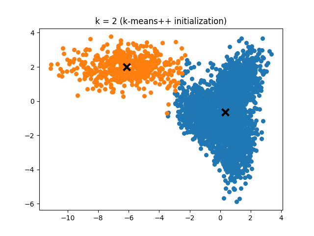 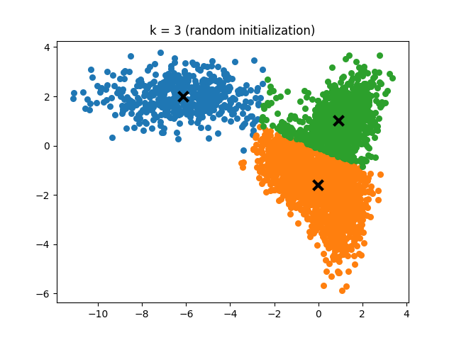 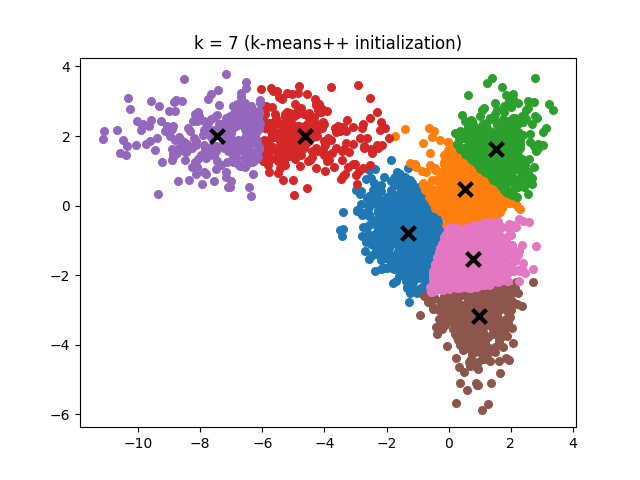 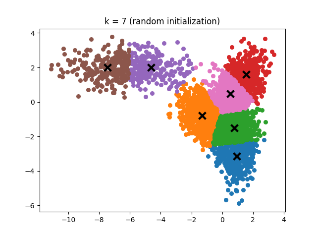
As can be observed in the two k=7 figures, the two initialization methods produce very similar clusterings. This similarity in performance is expected, as the data points being clustered are randomly generated and both methods are capable of effectively partitioning the dataset.
Cost vs. k
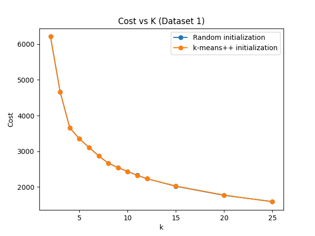
The cost vs. k plot illustrates the relationship between the number of clusters (k) and the sum of squared Euclidean distances between data points and their assigned centroids. As the value of k increases, the cost generally decreases due to the data points being more closely grouped around their respective centroids. However, the rate of decrease tapers off as k becomes larger, indicating diminishing returns for increasing k. Both initialization methods, random and k-means++, show the same trends in cost reduction, suggesting that their performance in partitioning Dataset 1 is comparable. This observation further supports the idea that both methods are effective at clustering the randomly generated data points in this dataset. Both methods are plotted here, but because their cost values are so similar it is difficult to distinguish the two lines.
Iterations vs. k
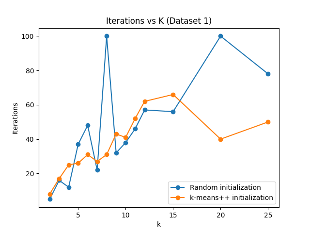
The iterations vs. k plot reveals the number of iterations required for the k-means algorithm to converge for different values of k and initialization methods. The relationship appears noisy, but a noticeable trend emerges where k-means++ initialization generally converges faster than random initialization, particularly at higher values of k. Furthermore, k-means++ never reaches the iteration limit of 100, while random initialization does so twice. This result indicates that the k-means++ initialization method has an advantage in terms of convergence speed, especially when using larger values of k. Faster convergence can lead to more efficient clustering, highlighting the benefits of using the k-means++ initialization method over random initialization.
Dataset 2
Clusterings
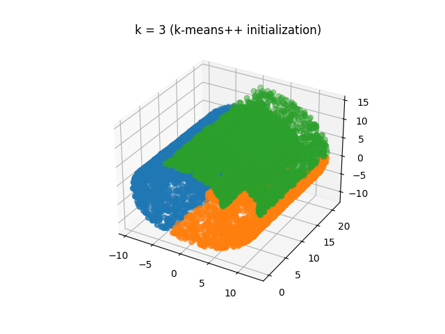 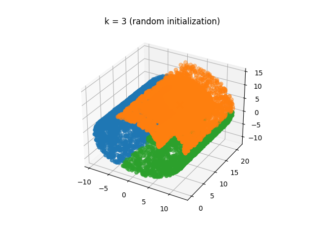 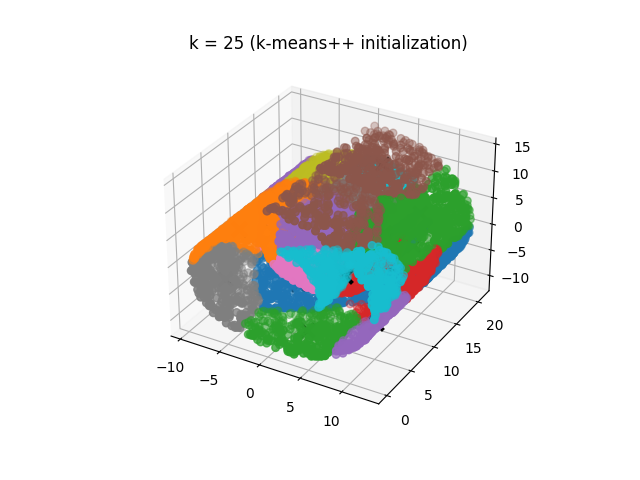 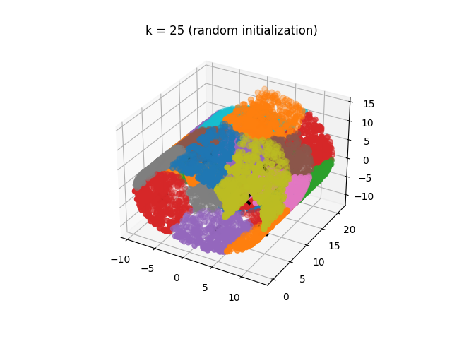
Similar to Dataset 1, the clusterings generated by both initialization methods appear quite alike in the k=3 scenario. However, when k is increased to 25, a discernible difference emerges between the resulting clusterings of the two techniques. This discrepancy is likely attributable to the greater underlying structure present in the data, which allows the k-means++ initialization method to consistently position centroids in a manner distinct from random initialization.
Cost vs. k
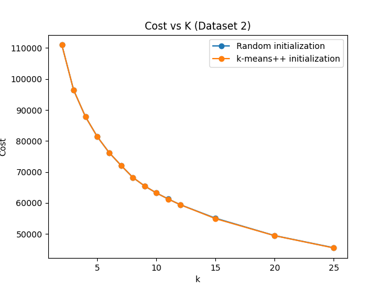
Despite the visible differences in the clusterings produced by the two initialization methods, it is noteworthy that they achieve similar cost values. This outcome highlights the effectiveness of both approaches in minimizing the sum of squared Euclidean distances between data points and their corresponding centroids. As a result, even though the cluster assignments may appear different, the overall quality of the clustering solutions remains comparable, demonstrating that both random and k-means++ initialization methods are capable of providing efficient partitioning of the dataset.
Iterations vs. k
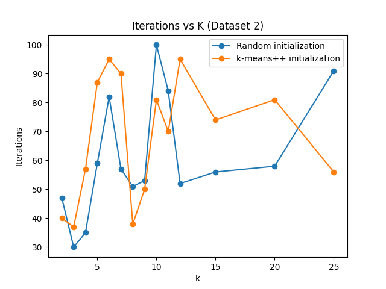